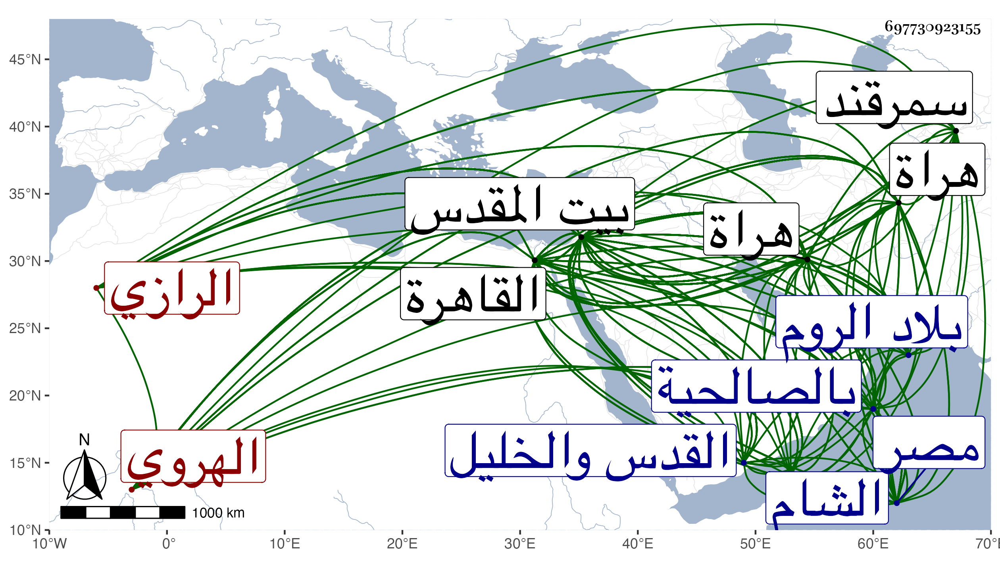

0902Sakhawi.DawLamic.ITO20230111-ara1.EIS1600.697730923155
Biography ID: 697730923155
359
محمد بن عطاء الله بن محمد واختلف فيمن بعده فقيل أحمد بن محمود بن الإمام فخر الدين محمد بن عمر وقيل محمود بن أحمد بن فضل الله بن محمد الشمس أبو عبد الله بن أبي الجود وأبي البركات الرازي الأصل الهروي . هكذا كان يزعم أنه من بني الفخر الرازي ، قال شيخنا : ولم نقف على صحة ذلك ولا بلغنا من كلام أحد من المؤرخين إنه كان للإمام ولد ذكر فالله أعلم . ولد بهراة سنة سبع وستين وسبعمائة واشتغل في بلاده حنفيا ثم تحول شافعيا وأخذ عن التفتازاني وغيره واتصل بتمرلنك على هيئة المباشرين ، ثم حصل له منه جفاء فتحول لبلاد الروم مملكة ابن عثمان فقام عليه ابن الفنري حتى إنفصل عنها بعد يسير ، وقدم القدس سنة أربع عشرة فحج وعاد إليه في التي بعدها فاتفق قدوم نوروز صاحب مملكة الشام القدس فيها وقد اشتهر أمره بها وأشاع أتباعه أنه يحفظ الصحيحين وأنه إمام الناس في المذهب الشافعي والحنفي وفي غيره من العلوم على جاري عادة العجم في التفخيم والتهويل بحيث كان حاملا لنوروز على الاجتماع به فراج عليه سيما لما حدثه عن ملوك الشرق فولاه تدريس الصلاحية به بعد الشهاب ابن الهائم فباشرها ولم يلبث أن دخل المؤيد القدس بعد قتله نوروز فراج أمره عليه أيضا وعظم في عينيه فأقره على الصلاحية . ولما رجع لمصر هاداه الهروي وكاتبه وسأله في القدوم عليه فأذن له فقدم القاهرة في صفر سنة ثماني عشرة بعد أن خرج الطنبغا العثماني لتلقيه وصعد به إلى القلعة وبالغ السلطان في إكرامه وأجلسه عن يمينه ثم أنزله بدار أعدت له وأنعم عليه بفرح بسرج ذهب وقماش ورتب له في كل يوم ثلاثين رطل لحم ومائتي درهم وتبعه كثير من الأمراء والمباشرين والأعيان في إكرامه بالهدايا الوافرة فتزايد اشتهار الدعاوى العريضة منه وأنه يحفظ عن ظهر قلب صحيح مسلم بأسانيده وصحيح البخاري متنا بلا إسناد بل تارة يقول أنه يحفظ إثني عشر ألف حديث بأسانيدها فعقد له المؤيد مجلسا بين يديه بالعلماء وألزم بإملاء اثني عشر حديثا متباينة فلم يفطن لذلك ولا عرف المراد به ولا أملى ولا حديثا واحدا بل لم يورد حديثا إلا وظهر خطأه فيه بحيث ظهر لمن يعتمد مجازفته وأن كل ما ادعاه لا صحة له وما أمكنه إلا التبري مما نسب إليه وكان مما وقع أنه سئل عن سنده بصحيح البخاري فقال حدثني به شيخنا الشمس علي بن يوسف عن شيخ يقال له أبو الفتح عمر مائة وعشرين سنة عن البوشنجي شيخ عاش مائة وثلاثين سنة عن أبي الوقت ثم ناقض ذلك لما ولي القضاء بالقاهرة في سنة إحدى وعشرين حيث رواه عن أبيه عن أبي البركات عطاء الله ليحاكي في ذلك رواية القاضي جلال الدين عن أبيه وإن والده أبا البركات سمعه من شيخ يقال له عبد الكريم الهروي بسماعه من أبي الفتح البوشنجي عن أبي الوقت ، وناقضهما في سنة موته فإنه كتب للتقي الفاسي إنه قرأه على العلامة الزين عبد السلام بن محمد بن عبد العزيز الأبرقوهي قال حدثنا الإمام المعمر شارح السنة أبو المعالي أحمد بن عبد الوهاب بن يحيى البخاري ثنا الإمام التقي أبو بكر بن علي بن خلد البكري وكتب له أيضا أنه حدثه به الإمام الزين أبو القسم إسمعيل بن أحمد التكريتي أنا الإمام العلاء أبو البركات علي بن يوسف بن إسحق الكازروني أنا الشيخ جلال الدين محمود بن عبد السلام الحصني وكتب له أيضا أنه حدثه به أبو الفتح القسم بن أحمد المرغيناني ثنا الشيخ جمال الدين عبد الرحيم بن الحسن الأنصاري أنا الشيخ بدر الدين حسن بن عبد القوي المدني الثلاثة عن أبي الوقت . وكتب بخطه أيضا في سنة خمس عشرة للجمال بن موسى المراكشي أنه سمعه على الشمس علي ابن يوسف بن محمد بن أحمد بن عبد الكريم الكازروني بسماعه له على ناصر الدين محمد بن اسمعيل بن أبي القسم الفارقي عن ابن أبي الذكر عن الزبيدي ، وحدث في بيت المقدس بصحيح مسلم عن نور الدين أبي زكريا يحيى بن حسن بن أحمد النيسابوري قراءة وسماعا عن شمس الدين أبي القسم محمد بن عبد الله بن عبد الرحمن الأسحاقابادي النيسابوري سماعا ثنا أبو الفتح منصور الفراوي بسنده ، وقال إنه في غاية العلو كان بيننا وبين مسلم سبعة وكلهم نيسابوريون . وبعد عقد المجلس بقليل ولي نظر القدس والخليل مع تدريس الصلاحية وتوجه لمباشرة ذلك ثم قدم في سلخ ربيع الأول سنة إحدى وعشرين واجتمع بالسلطان فأكرمه وأجرى عليه راتبه وأتته الهدايا من الأمراء ونحوهم ولم يلبث أن غضب السلطان على الجلال البلقيني فاستقر بالهروي في يوم الثلاثاء تاسع عشري جمادى الأولى منها عوضه ونزل معه جقمق الدوادار وقطلو بغا التنمي رأس نوبة في آخرين من الأمراء وغيرهم من القضاة والأعيان حتى حكم بالصالحية على العادة وتوجه لداره فسار سيرة غير مرضية وظهرت منه في القضاء أمور كثيرة واقتضت النفرة منه من الطمع والمجازفة ثم اجتمع جمع من أهل بيت المقدس فرفعوا عليه أشياء عاملهم بها لما كان ناظرا عليهم فثبت عليه مال كثير وألزم به . قال ابن قاضي شهبة وتعصب عليه جماعة البلقيني فصرف قبل استكمال سنة في ربيع الأول سنة اثنتين وعشرين مع إهانته وجمع من الخاصة بحيث لزم بيته لا يجتمع بأحد إلى أن رسم له بالعود إلى القدس على تدريس الصلاحية فسافر في عاشر ربيع الأول سنة ثلاث وعشرين ولم ينفك عن دعواه ولكن لكسر شوكته داهن الناس وداهنوه ، ثم قدم القاهرة بعد موت المؤيد ولم تطل إقامته ورجع إلى القدس ثم سعى حتى قدم القاهرة أيضا في صفر سنة سبع وعشرين فولي في تاسع ربيع الآخر منها كتابة السر عوضا عن الجمال يوسف الكركي ولم يلبث أن انفصل في حادي عشر جمادى الآخرة عنها وأعيد بعد أشهر في ثامن ذي القعدة لقضاء الشافعية فلم ينفك عن سيرته الأولى فصرف في ثالث رجب سنة ثمان وعشرين وفر هاربا ممن له ظلامة فما طلع خبره إلا في بيت المقدس فاستمر به على تدريس الصلاحية وحج فيها ثم عاد إلى بيت المقدس وأشاع أنه تزهد ولبس ثياب الفقراء وتبرأ من زي الفقهاء ثم في أثناء السنة التي تليها ظهر بطلان ذلك فإنه ورد منه كتاب إلى السلطان يستدعي منه الإذن في الحضور إلى القاهرة ليبدي له نصيحة فلم يؤذن له في الحضور وأجيب بأن يكتب بالنصيحة فإن كان لها حقيقة أذن له في الحضور فلم يعد جوابه إلى أن ورد الخبر بموته في يوم الاثنين تاسع عشر ذي الحجة سنة تسع وعشرين وقد جاز الستين بقليل . وقد ذكره شيخنا في معجمه وقال عقب إيراد الأسانيد التي كتبها للفاسي : والذي أحلف به أنه لا وجود لأحد من هؤلاء التسعة في الخارج والسلام وأقول في سند مسلم أيضا أنه من أبطل الباطل ثم قال وقد سمعت من فوائده كثيرا لكنه كان كثير المجازفة جدا اتفق كل من عرفه أنهم لم يروا أسرع ارتجالا منه للحكايات المختلقة وذكر لي عنه الزين القلقشندي والبدر الأقصرائي وسهل بن أبي اليسر وغيرهم من ذلك العجائب وشاهدت منه الكثير من ذلك . وذكره في إنبائه محيلا على الحوادث ووصفه في فتح الباري بالعالم . وقال ابن قاضي شهبة : كان إماما عالما غواصا على المعاني يحفظ متونا كثيرة ويسرد جملة من تواريخ العجم مع الوضاءة والمهابة وحسن الشكالة والضخامة ولين الجانب على ما فيه من طبع الأعاجم ولقد سمعت الشهاب بن حجي يثني عليه ويتعجب من سرده لتواريخ العجم . وقال الجمال الطيماني أنه يحل الكتب المشكلة ويتخلص فيها وصنف شرح مسلم وغيره وبني بالقدس مدرسة ولم تتم . وقال العيني : كان عالما فاضلا متفننا له تصانيف كشرح مشارق الأنوار وشرح صحيح مسلم يعي المسمى فضل المنعم وشرح الجامع الكبير من أوائله ولم يكمله وكان قد أدرك الكبار مثل التفتازاني والسيد وصارت له حرمة وافرة ببلاد سمرقند وهراة وغيرهما حتى كان اللنك يعظمه ويحترمه ويميزه على غيره بحيث يدخل عنده في حريمه ويستشيره وربما كان يرسله في مهماته ولذا قيل إنه وزيره وليس كذلك ، وقدم في زمن الناصر فرج وتوطن القدس ، إلى أن قال : ولم يخلف سوى زوجته وهي ابنة الشيخ همام الدين العجمي بل يقال أن له ابن في هراة وكان صاحب حرمة وسطوة في وظائفه غير أنه لم يكن مشكورا من غير علة ظاهرة فيه . وقال المقريزي أنه ولي القضاء وكتابة السر فلم ينجب وكان يقرئ في المذهبين ويعرف العربية وعلمي المعاني والبيان ويذاكر بالأدب والتاريخ ويستحضر كثيرا من الأحاديث والناس فيه بين غال ومقصر وأرجو أن يكون الصواب ما ذكرته . وقال وغيره : كان شيخا ضخما طوالا أبيض اللحية مليح الشكل إلا أن في لسانه مسكة إماما بارعا في فنون من العلوم له تصانيف تدل على غزير علمه واتساع نظره وتبحره في العلوم منصفا للحنفية إلى الغاية صادعا بالحق تاركا للتعصب ، وكان يركب بعد ولايته البغلة بهيئة الأعاجم بفرجية وعذبة مرخية على يساره فأقام مدة ثم لبس زي قضاة مصر ، وساق الأبيات التي وجدها المؤيد وأولها :
| يا أيها الملك المؤيد دعوة | من مخلص في حبه لك يفصح |
وأن غالب الفقهاء تعصبوا عليه وبالغوا في التشنيع ورموه بعظائم ، الظن براءته عن أكثرها وادعى عليه بمال بعض الأوقاف وتوجهوا به ماشيا ومنعوه من الركوب إلى غير ذلك مما بسط في الحوادث وكان معدودا من أعيان الأئمة العلماء لكنه لم يرزق السعادة في مناصبه لأنه كان ظنينا بنفسه معجبا بها إلى الغاية فعجزه الله . قلت وقد قرئ عليه شرحه لمسلم وكذا صنف شرحا على المصابيح وثنا عنه غير واحد منهم الأبي وسمع منه ابن موسى وغيره وحكى لنا الزين البوتيجي من مباسطاته وهو في عقود المقريزي مبسوطا رحمه الله وإيانا .
